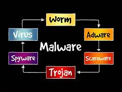

What Is Malware

Malware, short for malicious software, refers to any software intentionally designed to cause damage to a computer, server, client, or computer network. Malware encompasses a wide range of malicious programs, including viruses, worms, trojans, ransomware, spyware, adware, and more. Here's detailed information about malware, its types, and how to identify it:
Reason to Avoid Malware
Different kinds of Malware:
These are programs that replicate themselves by attaching to other programs. They can corrupt or delete data, steal information, or cause system instability.
Unlike viruses, worms can spread independently over computer networks. They exploit vulnerabilities to replicate and spread rapidly, consuming network bandwidth and causing system slowdowns.
Named after the Trojan Horse from Greek mythology, trojans disguise themselves as legitimate software but perform malicious actions when executed. They often create backdoors for attackers, steal sensitive information, or facilitate other malware infections.
This type of malware encrypts files or locks users out of their systems, demanding ransom payments for decryption keys or system access.
Spyware secretly monitors user activities, collects personal information, and sends it to remote servers without the user's consent. It can track keystrokes, browsing habits, and login credentials.

Adware displays unwanted advertisements, redirects web traffic, and tracks user behavior for advertising purposes. While not inherently malicious, it can lead to privacy violations and system performance issues.
Botnets are networks of compromised computers (bots) controlled by a single entity (botmaster). They can be used for distributed denial-of-service (DDoS) attacks, spam campaigns, or other malicious activities.